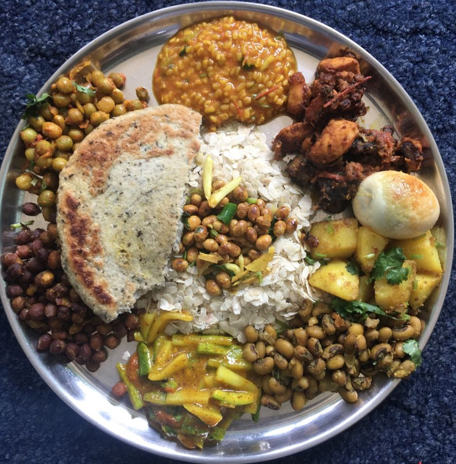

Pokhara, located in Nepal, is a popular tourist destination known for its natural beauty, adventure tourism, and cultural sites. The city is situated in a valley surrounded by the Himalayan Mountains, including the Annapurna range. The stunning views of these mountains are a major draw for visitors.
Another attraction in Pokhara is Phewa Lake, which is a beautiful lake offering stunning views of the Himalayan Mountains. Visitors can go boating or take a walk along the lakeside to enjoy the scenery.
Adventure tourism is another major attraction in Pokhara, and visitors can enjoy activities such as paragliding, bungee jumping, zip-lining, and white-water rafting. The Annapurna Base Camp Trek is also a popular route that takes visitors through the Himalayan Mountains, starting from Pokhara.
In addition to natural beauty and adventure tourism, Pokhara also has many cultural and historical sites that attract tourists. These include the Bindhyabasini Temple, the World Peace Pagoda, and the International Mountain Museum.
The city also has a vibrant food and shopping scene, with visitors able to try local Nepali cuisine and shop for souvenirs and handicrafts in the local markets.
Overall, Pokhara offers a unique combination of natural beauty, adventure tourism, cultural heritage, and local experiences, making it a popular destination for tourists from around the world.
Chitwan
A district in Nepal's southwest called Chitwan is renowned for its varied flora and wildlife, including the well-known Chitwan National Park. The district's administrative center lies at Bharatpur, the fifth-largest city in Nepal and the entrance to the national park.
One of the most well-liked tourist locations in Nepal is Chitwan National Park, a UNESCO World Heritage Site. Numerous endangered species, including Asian elephants, one-horned rhinoceroses, Bengal tigers, and other kinds of birds, reptiles, and mammals, may be found in the park. To discover the park's rich environment, visitors may take jungle safaris, elephant rides, canoe journeys, and bird watching tours.A district in Nepal's southwest called Chitwan is renowned for its varied flora and wildlife, including the well-known Chitwan National Park. The district's administrative center lies at Bharatpur, the fifth-largest city in Nepal and the entrance to the national park.
One of the most well-liked tourist locations in Nepal is Chitwan National Park, a UNESCO World Heritage Site. Numerous endangered species, including Asian elephants, one-horned rhinoceroses, Bengal tigers, and other kinds of birds, reptiles, and mammals, may be found in the park. To discover the park's rich environment, visitors may take jungle safaris, elephant rides, canoe journeys, and bird watching tours.
Everest base camp
The Everest Base Camp trek on the south side, at an elevation of 5,364 m (17,598 ft), is one of the most popular trekking routes in the Himalayas and about 40,000 people per year make the trek there from Lukla Airport (2,846 m (9,337 ft)).[5] Trekkers usually fly from Kathmandu to Lukla to save time and energy before beginning the trek to the base camp. However, trekking to Lukla is possible. There are no roads from Kathmandu to Lukla and as a result, the only method of transporting large and heavy goods is by plane. On 25 April 2015, an earthquake measuring 7.8 on the moment magnitude scale, struck Nepal and triggered an avalanche on Pumori that swept through the South Base Camp. At least 19 people were said to have been killed as a result. Just over two weeks later, on 12 May, a second quake struck measuring 7.3 on the Mw. Some of the trails leading to Everest Base Camp were damaged by these earthquakes and needed repairs.
Kathmandu
Nepal’s Kathmandu Valley is home to hundreds of sacred sites, and to a distinct and authentic form of Buddhism practiced by the Newar people. Lacking a monastic tradition, the Newars instead directed their worship to chivas and chaityas, or shrines, which abound in the urban landscape and the sacred topography of the valley. Chivas were and have continued to be erected in the memory of a deceased family member for the accumulation of merit by the deceased, by members of surviving generations, and by all sentient creatures. But instead of being limited to private devotion as funerary monuments, chivas instead became the focus of public worship for members of the community, as almost all of them are in public or semi-public spaces.
Chivas appear in a range of scales, from the monumental, like the mahachaitya, or “great chaitya,” of Swayambhunath down to sizes less than the height of a person. The oldest of them were erected in the Licchavi period, named after the ancient kingdom that ruled the Kathmandu Valley between the fifth and eighth centuries, while a revival of the construction of chivas took place in the seventeenth century. The typical votive chiva resembles a building in miniature, sitting on a plinth, adorned with carvings at different levels, and surmounted by a dome and prominent finial. Representing some of the best stone architecture in Nepal, the carved decoration depicts the saints and divinities of the Newari Buddhism pantheon, including the five versions of the Buddha and a profusion of Bodhisattvas. The shrines also contain carved inscriptions that address the sacred object directly and give information about the donor and the year of its creation. Some even contain admonitions not to destroy the shrine and warn of terrible consequences for those who do.
lumbini
Lumbinī (Nepali: लुम्बिनी pronounced [ˈlumbini] (listen), "the lovely") is a Buddhist pilgrimage site in the Rupandehi District of Lumbini Province in Nepal. It is the place where, according to Buddhist tradition, Queen Mahamayadevi gave birth to Siddhartha Gautama at around 566 BCE.Gautama, who, according to Buddhist tradition, achieved Enlightenment some time around 528 BCE,became Gautama Buddha and founded Buddhism.Lumbini is one of many magnets for pilgrimage that sprang up in places pivotal to the life of the Buddha.
Lumbini has a number of older temples, including the Mayadevi Temple, and various new temples, funded by Buddhist organisations from various countries, have been completed or are still under construction. Many monuments, monasteries and a museum, and the Lumbini International Research Institute are also within the holy site. Also, there is the Puskarini, or Holy Pond, where the Buddha's mother took the ritual dip prior to his birth and where he had his first bath. At other sites near Lumbini, earlier Buddhas were, according to tradition, born, then achieved ultimate Enlightenment and finally relinquished their earthly forms. The Government of Bangladesh is currently constructing a major Buddhist Monastery in Lumbhini.
Lumbini was made a World Heritage Site by UNESCO in 1997.
Nepalese Food and Cuisines
Momo
Momo is a type of steamed filled dumpling, with origins from Tibet.Momo is native to Tibet, Nepal as well as Indian Himalayan Region of Ladakh, Sikkim, Assam, and Arunachal Pradesh, Himachal Pradesh, Uttarakhand, and Darjeeling.It is popular across a wider region of the Indian subcontinent. Recently, it has also hit in many international markets.Momo is similar to Chinese baozi, jiaozi, and mantou, Mongolian buuz, Japanese gyoza, Korean mandu and Turkic manti, but heavily influenced by cuisine of the Indian subcontinent with spices and herbs. Momo are extremely popular and can be found in every kind of shop from restaurants to street vendors.
Dhal Bhat
Dal bhat is a traditional meal from the Indian subcontinent, popular in many areas of Nepal, India and Pakistan, Bangladesh. It consists of steamed rice and a cooked lentil or other pulses stew called dal. It is a staple food in these countries. Bhat or chawal means "boiled rice" in a number of Indo-Aryan languages.
At higher elevations in Nepal, above 6,500 feet (2,000 m), where rice does not grow well, other grains such as maize, buckwheat, barley or millet may be substituted in a cooked preparation called dhindo or atho in Nepal. Bhat may be supplemented with roti in Nepal (rounds of unleavened bread).
Dal may be cooked with onion, garlic, ginger, chili, tomatoes, or tamarind, in addition to lentils or beans. It always contains herbs and spices such as coriander, garam masala, cumin, and turmeric. Recipes vary by season, locality, ethnic group and family.
Dal bhat is often served with vegetable tarkari or torkari (तरकारी in Hindi, তরকারি in Bengali) – a mix of available seasonal vegetables. It is also called dal bhat tarkari (दाल भात तरकारी) in Nepali and Bengali (ডাল ভাত তরকারি). A small portion of pickle (called achar or loncha) is sometimes included. In Bengal (West Bengal and Bangladesh) dal bhat may accompany machh bhaja (মাছ ভাজা - fried fish).
Newari Thali Set
Newa cuisine (also referred to as Newar cuisine) is a subset of Nepalese cuisine that has developed over centuries among the Newars of Kathmandu (Kathmandu is called Yen in Nepal Bhasa) in Nepal. Newa cuisine is the most celebrated food variety in the country that consists of over 200 dishes. It is more elaborate than most Nepalese cuisines because the Kathmandu Valley has exceptionally fertile alluvial soil and enough wealthy households to make growing produce more profitable than cultivating rice and other staples.
Food is the integral part of Newar culture. Different kind of foods are prepared for different occasions, considering the climate and nutritional needs for body. Newars are renowned for their sumptuous feasting.Dishes served during feasts and festivals have symbolic significance.
Dhindo
Dhindo, a kind of polenta, is usually cooked with cornflour and buckwheat. This kind of food can be found in most kitchens of this country. Since rice and wheat cultivation are not popular in the upper reaches, people in most areas eat Dhido. It is a popular Nepalese traditional food after the Dal Bhat, mainly paired with local kukhura ko jhol (curried chicken), green vegetables, kimchi, curried vegetables, and gundruk ko jhol (dried fermented leafy vegetables). It is rich in nutrients and regarded as a very healthy diet.
Selroti
Selroti is a very addictive traditional food in Nepal. It is made of rice flour, salt, and sugar and then deep-fried in a ring shape. This food is prepared for Tihar, a widely celebrated Hindu festival in Nepal. It looks like a doughnut or bagel, but it is thinner and has a bigger hole. AS a kind of bread, it mostly serves as a snack and breakfast, with different curried vegetables, curried chicken, yogurt, and tea. In the past, it mainly appeared in street vendors and small restaurants. Nowadays, it can also be found in major department stores.
Adventures in Nepal
No 1. Trekking
Trekking in Nepal is an incredible experience, with stunning scenery, fascinating culture, and friendly people. Some of the most popular trekking destinations in Nepal include:
1. Everest Base Camp Trek: This is one of the most iconic and challenging treks in the world, taking you to the base of the highest mountain on earth. It takes around 12 days to complete the trek, and you'll need to be in good physical condition.
2. Annapurna Circuit Trek: This trek takes you through a variety of landscapes, including lush forests, high-altitude deserts, and snow-capped peaks. It takes around 18 days to complete the circuit, and you'll need to be prepared for some challenging terrain.
3. Langtang Valley Trek: This trek takes you through the Langtang Valley, which is known for its stunning scenery and unique culture. It takes around 10 days to complete the trek, and it's a great option if you're looking for a shorter trek that's still challenging.
4. Upper Mustang Trek: This trek takes you through the remote region of Upper Mustang, where you'll see ancient Tibetan culture and stunning landscapes. It takes around 14 days to complete the trek, and you'll need to be prepared for some high-altitude trekking.
5. Manaslu Circuit Trek: This trek takes you through the remote region of Manaslu, which is known for its stunning mountain views and unique culture. It takes around 15 days to complete the trek, and you'll need to be in good physical condition.
These are just a few of the many trekking destinations in Nepal. Before embarking on any trek, it's important to do your research and make sure you're prepared for the challenges ahead. Hiring a local guide or porter can also be helpful for navigating the terrain and learning about the local culture.
Cost
The estimated cost of trekking in Nepal can vary depending on several factors such as the duration of the trek, the level of comfort you require, and the number of people in your group.
Here is a rough estimate of the cost of trekking in Nepal:
1. Permits: Trekking permits are required for most treks in Nepal. The cost of permits varies depending on the region and duration of the trek. For example, the cost of an Annapurna Conservation Area Permit (ACAP) is NPR 3,000 (approximately USD 25) per person, and a TIMS card (Trekker's Information Management System) costs NPR 2,000 (approximately USD 17) per person.
2. Guide and Porter: Hiring a guide and/or porter is recommended for most treks in Nepal. The cost of a guide ranges from USD 20 to USD 30 per day, while a porter may cost around USD 15 to USD 20 per day.
3. Accommodation and Food: The cost of accommodation and food can vary depending on the level of comfort you require. In general, teahouse accommodation costs around USD 5 to USD 10 per night, while the cost of food and drinks can range from USD 15 to USD 25 per day.
4. Transportation: The cost of transportation to and from the trekking starting point can also add up to the overall cost of the trek.
Taking all of these factors into account, a typical trekking trip to Nepal can cost anywhere from USD 500 to USD 1,500 or more per person for a 10-15 day trek. This cost can increase if you choose to go to the upper places or if you prefer a more luxurious trekking experience.
No.2 Paragliding
Paragliding in Nepal is a thrilling experience, with many beautiful locations to choose from. Nepal's breathtaking scenery and mountainous terrain make it a popular destination for paragliding enthusiasts.
One of the most popular places for paragliding in Nepal is Pokhara. It offers stunning views of the Annapurna mountain range, Phewa Lake, and the beautiful Pokhara Valley. The best time to go paragliding in Pokhara is from September to November and February to April.
Another recommended location for paragliding in Nepal is Sirkot, a village in the western region of Nepal. It offers stunning views of the Himalayan range and is a great place for paragliding. The best time to visit Sirkot for paragliding is from September to November.
Bandipur is another hilltop town that offers stunning views of the Himalayan range and is a great place for paragliding. The best time to visit Bandipur for paragliding is from September to November.
Godavari is a village located on the outskirts of Kathmandu, and it is a great place for paragliding. It offers stunning views of the surrounding hills, and the best time to visit Godavari for paragliding is from September to November.
Sarangkot is another popular location for paragliding in Nepal. It offers stunning views of the Annapurna range and is located on the outskirts of Pokhara. The best time to visit Sarangkot for paragliding is from September to November and February to April.
There are many other locations for paragliding in Nepal, and each offers its unique experience. Paragliding in Nepal is an adventure you won't forget.
cost
The cost of paragliding in Nepal varies depending on the location, the duration of the flight, and the company you choose to go with. Here are some estimated costs for paragliding in popular locations in Nepal:
1. Pokhara: The cost of paragliding in Pokhara ranges from around USD 70 to USD 120 for a 30-minute flight. The cost may increase for longer flights or tandem flights with an instructor.
2. Sirkot: The cost of paragliding in Sirkot ranges from around USD 70 to USD 100 for a 20-minute flight.
3. Bandipur: The cost of paragliding in Bandipur ranges from around USD 70 to USD 100 for a 20-minute flight.
4. Godavari: The cost of paragliding in Godavari ranges from around USD 60 to USD 90 for a 20-minute flight.
5. Sarangkot: The cost of paragliding in Sarangkot ranges from around USD 70 to USD 120 for a 30-minute flight. The cost may increase for longer flights or tandem flights with an instructor.
It is important to note that these are estimated costs, and the actual cost may vary depending on several factors. It is always a good idea to check with the paragliding company directly for their current rates and any additional fees or charges.
No.3 Rafting
Rafting in Nepal is a popular adventure activity that draws in tourists from all over the world. Nepal is home to some of the most spectacular rivers in the world, including the Kali Gandaki, Karnali, Sun Koshi, Trisuli, and many more.
The best time for rafting in Nepal is from September to early December and from March to May when the water levels are high and the weather is pleasant. However, it is possible to go rafting year-round.
There are many options available for rafting in Nepal, ranging from single-day trips to multi-day expeditions. The length of your trip will depend on your preference and the river you choose to raft on.
If you are an experienced rafter, you can try the more challenging rivers, which offer rapids ranging from Class III to Class V. If you are new to rafting, it is best to stick to the more manageable rivers with rapids ranging from Class I to Class III.
Some popular rivers for rafting in Nepal are the Trisuli River, Bhote Koshi River, and Sun Koshi River. Each river offers a unique experience and level of difficulty.
Rafting in Nepal is generally safe, but it is important to go with a reputable company and experienced guides. Safety equipment such as helmets, life jackets, and paddles should be provided by the rafting company.
Overall, rafting in Nepal is a thrilling and unforgettable experience that should not be missed by adventure enthusiasts.
cost
The cost of rafting in Nepal varies depending on the river you choose, the length of your trip, and the season in which you go. Here are some estimated costs for rafting in different places in Nepal:
Trisuli River: The Trisuli River is a popular destination for rafting in Nepal, and a one-day trip can cost anywhere from $20 to $50 USD per person, depending on the company and the season.
Bhote Koshi River: The Bhote Koshi River is a more challenging river with rapids ranging from Class III to Class V. A one-day trip can cost anywhere from $50 to $100 USD per person.
Sun Koshi River: The Sun Koshi River is a multi-day rafting trip that can take up to 9 days to complete. The cost for this trip can range from $700 to $1200 USD per person, depending on the company and the season.
Karnali River: The Karnali River is one of the longest rivers in Nepal and offers a challenging rafting experience with rapids ranging from Class III to Class V. A 10-day trip can cost anywhere from $1500 to $2500 USD per person.
It is important to note that these are estimated costs and can vary depending on the company you choose, the level of services and facilities they offer, and the season in which you go. It is always a good idea to research and compare prices from different rafting companies before booking your trip.
No.4 Bungee Jumping
Bungee jumping is a popular adventure activity in Nepal, with several locations offering bungee jumping experiences. The most popular and well-known location for bungee jumping in Nepal is the Bhote Koshi River, which is located about 3 hours from Kathmandu.
Here are some of the top places for bungee jumping in Nepal:
1. Bhote Koshi River: This location is the most popular destination for bungee jumping in Nepal. The jump takes place from a suspension bridge over the Bhote Koshi River and offers stunning views of the surrounding hills.
2. Pokhara: Pokhara is another popular destination for adventure sports in Nepal, and it offers bungee jumping experiences at the Hemja Bridge, which is about a 25-minute drive from Pokhara city.
3.Kushma: Kushma is a small town located in the western part of Nepal and offers bungee jumping experiences from a 228-meter suspension bridge over the Kali Gandaki River.
4. Last Resort: The Last Resort is a popular adventure resort located near the Nepal-Tibet border and offers bungee jumping experiences from a suspension bridge over the Bhote Koshi River.
These are some of the top places for bungee jumping in Nepal, but there are other locations that also offer the experience. It's important to choose a reputable company and ensure that all safety measures are in place before you take the leap.
cost
The cost of bungee jumping in Nepal can vary depending on the location and company. Here is an approximate cost range for bungee jumping in different places in Nepal:
1. Bhote Koshi River: The cost of bungee jumping at the Bhote Koshi River ranges from around 70 USD to 120 USD per person.
2. Pokhara: The cost of bungee jumping in Pokhara is around 68 USD per person.
3. Kushma: The cost of bungee jumping in Kushma is around 108 USD per person.
4. Last Resort: The cost of bungee jumping at the Last Resort is around 100 USD per person.
Note that these prices are subject to change and may vary depending on the season and availability. It's important to research and compare prices from different bungee jumping companies in Nepal to find a reputable one that offers a fair price for the experience. It's also recommended to read reviews from previous customers to ensure that the company has a good safety record and provides a good experience.
No.5 Biking
Biking in Nepal is a popular adventure activity that offers a unique way to explore the country's scenic landscapes and diverse culture. Here's some information about biking in Nepal and the cost:
1. Kathmandu Valley: The Kathmandu Valley is a popular biking destination in Nepal, with its ancient temples, traditional villages, and stunning scenery. There are many biking routes available in the valley, ranging from easy to difficult, with the cost of a guided biking tour ranging from $50 to $150 USD per person, depending on the length and the level of services offered.
2. Annapurna Circuit: The Annapurna Circuit is a famous trekking route in Nepal that can also be biked. This route offers breathtaking mountain views, remote villages, and challenging terrain. The cost of a guided biking tour on the Annapurna Circuit can range from $1200 to $2000 USD per person, depending on the company and the duration of the tour.
3. Mustang: Mustang is a remote region in Nepal that offers a unique biking experience with its rugged terrain, barren landscapes, and ancient Tibetan culture. The cost of a guided biking tour in Mustang can range from $2000 to $3000 USD per person, depending on the company and the duration of the tour.
4. Pokhara: Pokhara is a scenic city in Nepal that offers a range of biking options, including city tours, countryside tours, and mountain biking. The cost of a guided biking tour in Pokhara can range from $50 to $150 USD per person, depending on the duration and the level of services offered.
It is important to note that these are estimated costs and can vary depending on the company you choose, the level of services and facilities they offer, and the duration of the tour. Additionally, biking in Nepal requires a good level of fitness and experience, so it is recommended to choose a biking route that matches your level of skill and experience.


 Momo is a type of steamed filled dumpling, with origins from Tibet.Momo is native to Tibet, Nepal as well as Indian Himalayan Region of Ladakh, Sikkim, Assam, and Arunachal Pradesh, Himachal Pradesh, Uttarakhand, and Darjeeling.It is popular across a wider region of the Indian subcontinent. Recently, it has also hit in many international markets.Momo is similar to Chinese baozi, jiaozi, and mantou, Mongolian buuz, Japanese gyoza, Korean mandu and Turkic manti, but heavily influenced by cuisine of the Indian subcontinent with spices and herbs. Momo are extremely popular and can be found in every kind of shop from restaurants to street vendors.
Momo is a type of steamed filled dumpling, with origins from Tibet.Momo is native to Tibet, Nepal as well as Indian Himalayan Region of Ladakh, Sikkim, Assam, and Arunachal Pradesh, Himachal Pradesh, Uttarakhand, and Darjeeling.It is popular across a wider region of the Indian subcontinent. Recently, it has also hit in many international markets.Momo is similar to Chinese baozi, jiaozi, and mantou, Mongolian buuz, Japanese gyoza, Korean mandu and Turkic manti, but heavily influenced by cuisine of the Indian subcontinent with spices and herbs. Momo are extremely popular and can be found in every kind of shop from restaurants to street vendors.
 Dal bhat is a traditional meal from the Indian subcontinent, popular in many areas of Nepal, India and Pakistan, Bangladesh. It consists of steamed rice and a cooked lentil or other pulses stew called dal. It is a staple food in these countries. Bhat or chawal means "boiled rice" in a number of Indo-Aryan languages.
At higher elevations in Nepal, above 6,500 feet (2,000 m), where rice does not grow well, other grains such as maize, buckwheat, barley or millet may be substituted in a cooked preparation called dhindo or atho in Nepal. Bhat may be supplemented with roti in Nepal (rounds of unleavened bread).
Dal may be cooked with onion, garlic, ginger, chili, tomatoes, or tamarind, in addition to lentils or beans. It always contains herbs and spices such as coriander, garam masala, cumin, and turmeric. Recipes vary by season, locality, ethnic group and family.
Dal bhat is often served with vegetable tarkari or torkari (तरकारी in Hindi, তরকারি in Bengali) – a mix of available seasonal vegetables. It is also called dal bhat tarkari (दाल भात तरकारी) in Nepali and Bengali (ডাল ভাত তরকারি). A small portion of pickle (called achar or loncha) is sometimes included. In Bengal (West Bengal and Bangladesh) dal bhat may accompany machh bhaja (মাছ ভাজা - fried fish).
Dal bhat is a traditional meal from the Indian subcontinent, popular in many areas of Nepal, India and Pakistan, Bangladesh. It consists of steamed rice and a cooked lentil or other pulses stew called dal. It is a staple food in these countries. Bhat or chawal means "boiled rice" in a number of Indo-Aryan languages.
At higher elevations in Nepal, above 6,500 feet (2,000 m), where rice does not grow well, other grains such as maize, buckwheat, barley or millet may be substituted in a cooked preparation called dhindo or atho in Nepal. Bhat may be supplemented with roti in Nepal (rounds of unleavened bread).
Dal may be cooked with onion, garlic, ginger, chili, tomatoes, or tamarind, in addition to lentils or beans. It always contains herbs and spices such as coriander, garam masala, cumin, and turmeric. Recipes vary by season, locality, ethnic group and family.
Dal bhat is often served with vegetable tarkari or torkari (तरकारी in Hindi, তরকারি in Bengali) – a mix of available seasonal vegetables. It is also called dal bhat tarkari (दाल भात तरकारी) in Nepali and Bengali (ডাল ভাত তরকারি). A small portion of pickle (called achar or loncha) is sometimes included. In Bengal (West Bengal and Bangladesh) dal bhat may accompany machh bhaja (মাছ ভাজা - fried fish).
 Selroti is a very addictive traditional food in Nepal. It is made of rice flour, salt, and sugar and then deep-fried in a ring shape. This food is prepared for Tihar, a widely celebrated Hindu festival in Nepal. It looks like a doughnut or bagel, but it is thinner and has a bigger hole. AS a kind of bread, it mostly serves as a snack and breakfast, with different curried vegetables, curried chicken, yogurt, and tea. In the past, it mainly appeared in street vendors and small restaurants. Nowadays, it can also be found in major department stores.
Selroti is a very addictive traditional food in Nepal. It is made of rice flour, salt, and sugar and then deep-fried in a ring shape. This food is prepared for Tihar, a widely celebrated Hindu festival in Nepal. It looks like a doughnut or bagel, but it is thinner and has a bigger hole. AS a kind of bread, it mostly serves as a snack and breakfast, with different curried vegetables, curried chicken, yogurt, and tea. In the past, it mainly appeared in street vendors and small restaurants. Nowadays, it can also be found in major department stores.